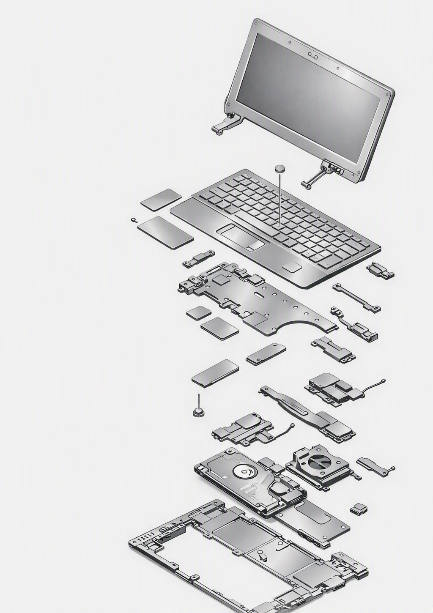
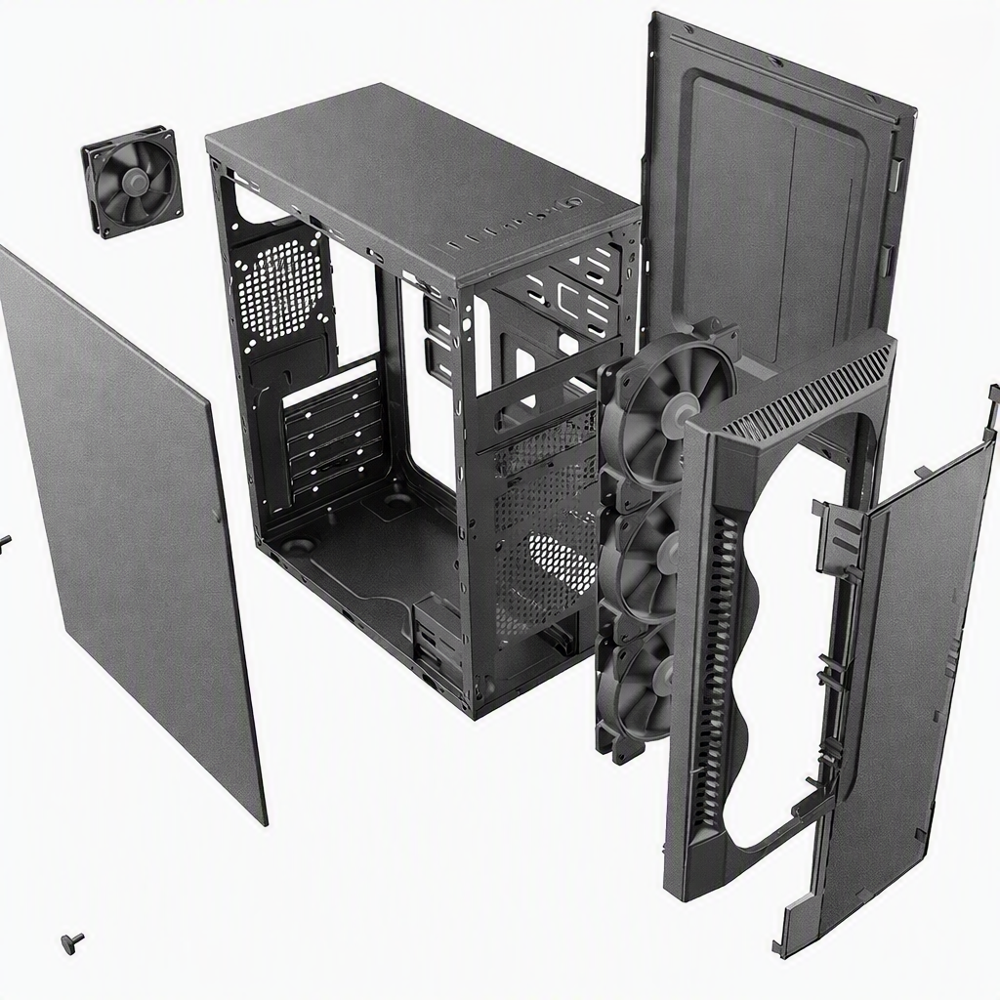
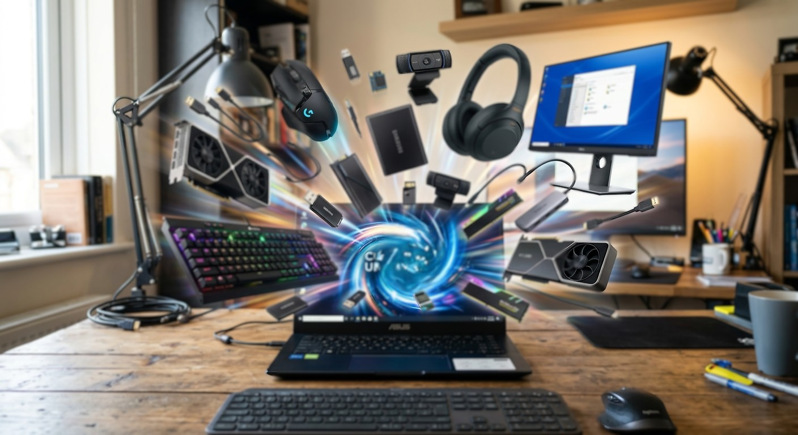

Alta performance e soluções inteligentes para seus equipamentos
A LógicoInfo é sua parceira ideal em assistência técnica e produtos de informática. Oferecemos suporte completo para computadores, notebooks e redes, garantindo máxima rapidez, segurança e eficiência para você ou sua empresa.
Falar com um Técnico Conheça nossos ServiçosAssistência Técnica Especializada
Nosso laboratório conta com estrutura moderna e técnicos certificados para diagnosticar e reparar seus equipamentos com precisão. Atendemos desde formatações simples até consertos avançados em placas-mãe.
- Manutenção preventiva e corretiva de PCs e Notebooks
- Formatação, limpeza e otimização de sistema
- Upgrade de hardware (Instalação de SSD, Memória RAM, Placas de Vídeo)
- Remoção de vírus, malwares e recuperação de dados
- Instalação e configuração de redes e Wi-Fi
- Montagem de PCs Gamers e Workstations personalizadas
- Atendimento e suporte técnico empresarial

Venha conferir nosso catálogo de produtos e componentes

Além de manutenção especializada, oferecemos uma linha completa de periféricos, peças de reposição e acessórios das melhores marcas do mercado. Encontre SSDs de alta velocidade, memórias, fontes reais, mouses, teclados, monitores e muito mais. Garantimos produtos originais com garantia total para que suas máquinas alcancem o máximo rendimento.

Ficou alguma dúvida?
Quanto tempo demora a avaliação técnica do meu equipamento?
O diagnóstico padrão é realizado em até 24 horas úteis. Após a análise, enviamos o orçamento detalhado via WhatsApp ou e-mail para sua aprovação antes de iniciar o serviço.
Os produtos e peças trocadas possuem garantia?
Sim! Todos os nossos produtos novos e peças utilizadas nos serviços possuem garantia de 90 dias a 1 ano, dependendo do fabricante.
Vocês buscam o equipamento em domicílio?
Oferecemos serviço de leva e traz para diversos bairros da região. Entre em contato pelo WhatsApp para verificar a disponibilidade no seu endereço.
Montam PC Gamer com peças compradas fora da loja?
Com certeza! Realizamos a montagem completa, organização de cabos (cable management), instalação do sistema operacional e testes de estresse das peças.